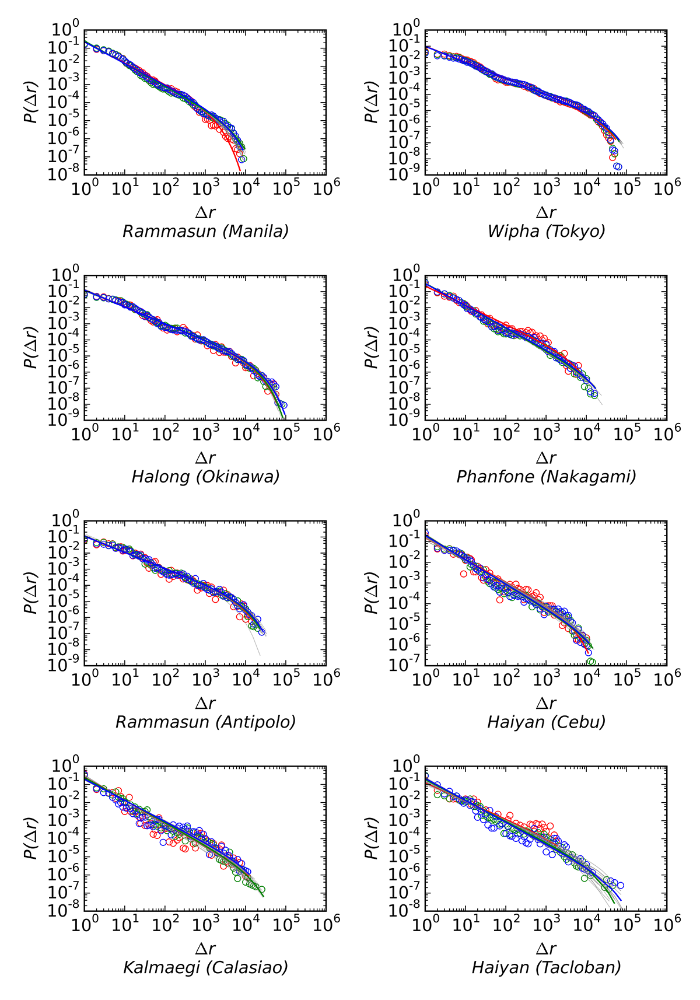
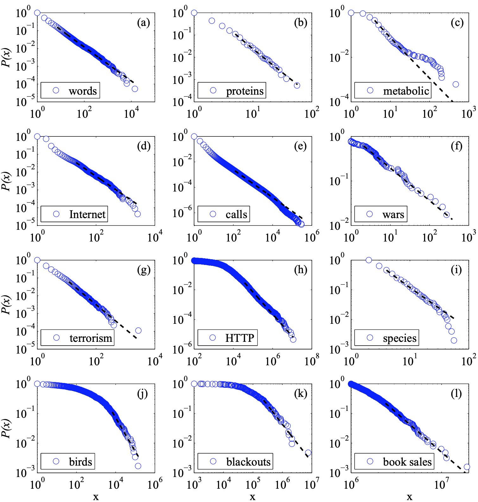

PowerLaw
The truncated power-law distribution can be captured by the following equation: Where Δr is the displacement, the scaling parameter (β), and the exponential cutoff (λ). What's the terminolog for P(Δr). And what's the precident for referring to the change in displacement as Δr rather than Δd? Question: How is the scaling parameter calculated? How is the exponential cutoff value λ calculated? When setting up the truncated power-law charts, please elaborate on how the scaling parameter (β) is determined, along with the exponential cutoff (λ) for each city. What's the terminology for P(Δr)? And what's the precedent for referring to the change in displacement as Δr rather than Δd? Links to explore in 2016 Ryan Q paper: https://journals.plos.org/plosone/article?id=10.1371/journal.pone.0147299#pone.0147299.ref044Distribution of displacements
scipy.stats.powerlaw - includes matplotlib.pyplot https://docs.scipy.org/doc/scipy-0.15.1/reference/generated/scipy.stats.powerlaw.html#scipy.stats.powerlaw poweRlaw package - R Language poweRlaw package - Colin S. GillespieMultiple distribution graphs
https://tryolabs.com/blog/2017/03/16/pandas-seaborn-a-guide-to-handle-visualize-data-elegantly/
FacetGrid - Multiple charts in columns
https://seaborn.pydata.org/generated/seaborn.FacetGrid.html
FacetGrid - Structured multi-plot grids
https://seaborn.pydata.org/tutorial/axis_grids.html#grid-tutorial
Multi-scale spatio-temporal analysis of human mobility
Storm Impact Summaries
Powerlaw Examples
Source: Clauset, Aaron, Cosma Rohilla Shalizi, and Mark EJ Newman.
"Power-law distributions in empirical data." SIAM review 51, no. 4 (2009): 661-703.
Includes R Code for working through samples - suggested by
https://www.stat.berkeley.edu/~aldous/Research/Ugrad/Willy_Lai.pdf
Overview of power-law packages (Matlab R, Python)
http://archive.li/ASSa#selection-233.242-233.246
Code in MatLab and R
http://tuvalu.santafe.edu/~aaronc/powerlaws/
Recommends steps for implementing (Matlab), R Language [Explore further]
http://intersci.ss.uci.edu/wiki/index.php/Power-law_distributions